Our goal is to explore how good the weighted likelihood is at approximating the true likelihood for correlated data.
Suppose we observe \(\hat{\beta}\) and \(se(\hat{\beta})\), both \(p\)-vectors. Suppose that \[ \hat{\beta} \sim N(\theta, S R S) \] where \(\theta\) is an unknown mean and \(R\) is a correlation matix. Our question is, can we approximate the true likelihood with \[ \prod_{j=1}^{p} \left( N( \hat{\beta}_j ; \theta_j, s_j^{2}) \right)^{w_j}\] where \(w_j\) are weights. I look at using \(w_j\) equal to the inverse of the LD score \(w_j = \frac{1}{\sum_{i=1}^{p} r_{ij}^{2}}\), \(w_j = 1\) and \(w_j\) equal to the LD score \(\sum_{i=1}^{p} r_{ij}^{2}\).
Here is one LD bock estimated from 1000 genomes data using the method of Guan and Stephens (20??).
library(reshape2)
library(ggplot2)
library(matrixStats)
R <- readRDS("../data/one_ld_block.RDS")
melted_R <- melt(R)
ggplot(melted_R) + geom_tile(aes(x=Var1, y=Var2, fill=value)) + scale_fill_gradient2(low="blue", high="red", mid="white")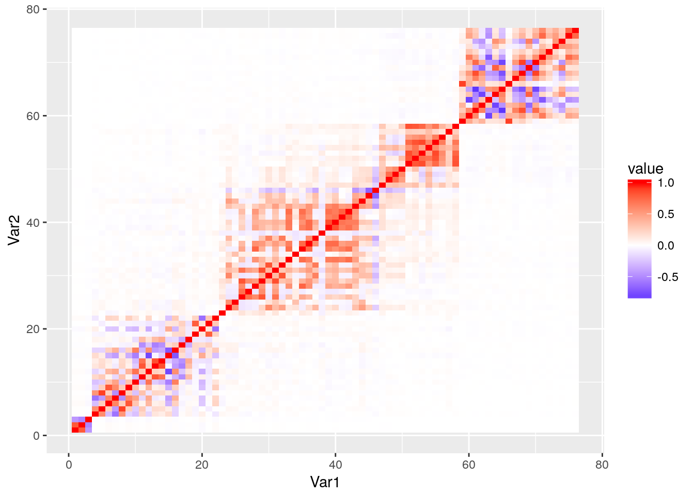
We first generate some data. The standard errors are generated as though these are GWAS effect sizes from a study with sample size 1000.
library(mvtnorm)
set.seed(1e8)
true_theta <- rnorm(n=76, sd=0.1)
maf <- rbeta(n=500, 1, 5)
maf <- maf[maf > 0.01][1:76]
se <- sqrt(1/(2*1000*maf*(1-maf)))
sigma <- diag(se) %*% R %*% diag(se)
betahat <- rmvnorm(n=1, mean = true_theta, sigma = sigma )
hist(betahat/se, breaks=30)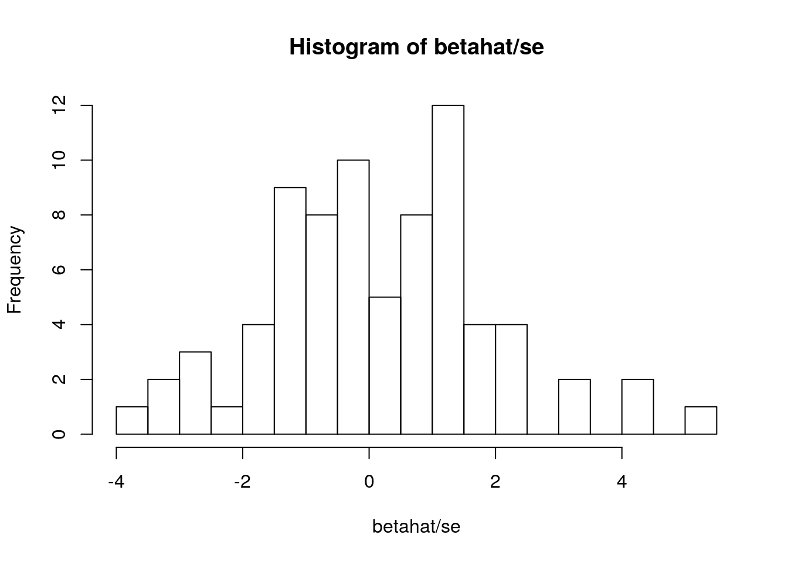
Now that we have some data, we calculate the likelihood for many possible values of \(\theta\) using the true likelihood and the weighed approximation.
ldsc <- colSums(R^2)
ll_true <- ll_ldsc <- ll_1 <- ll_invldsc <- c()
nsample <- 1000
for(i in 1:nsample){
theta <- rnorm(n=76, sd=0.1)
ll_true <- c(ll_true, dmvnorm(betahat, mean=theta, sigma= sigma, log=T))
aa <- dnorm(x=betahat, mean=theta, sd=se, log = T)
ll_ldsc <- c(ll_ldsc, sum(ldsc*aa))
ll_1 <- c(ll_1, sum(aa))
ll_invldsc <- c(ll_invldsc, sum((1/ldsc)*aa))
}
cor(ll_ldsc, ll_true)[1] 0.5149099cor(ll_1, ll_true)[1] 0.4311517cor(ll_invldsc, ll_true)[1] 0.2760101plot(ll_true, ll_invldsc, ylab="Approximate ll - inverse LD score weights")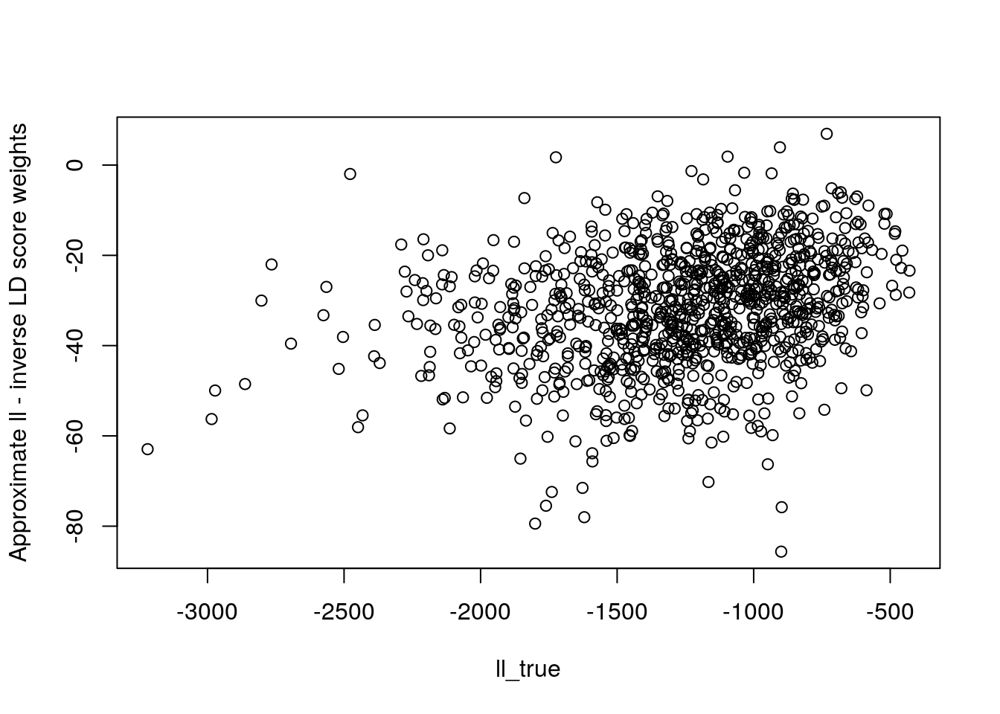
plot(ll_true, ll_1, ylab="Approximate ll - weights equal to 1")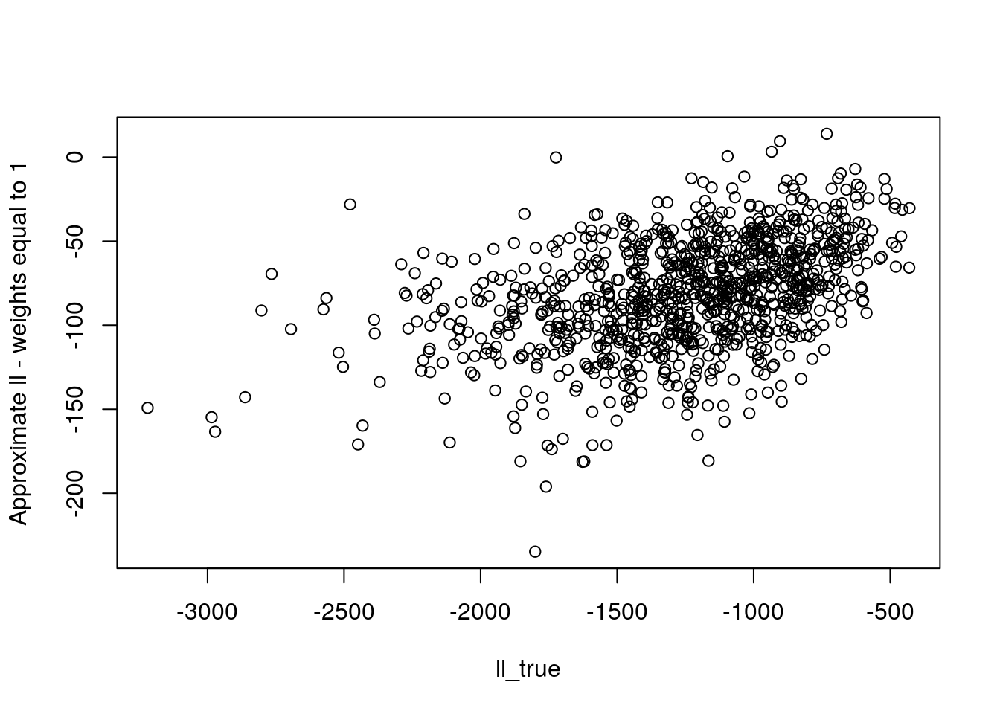
plot(ll_true, ll_ldsc, ylab="Approximate ll - LD score weights")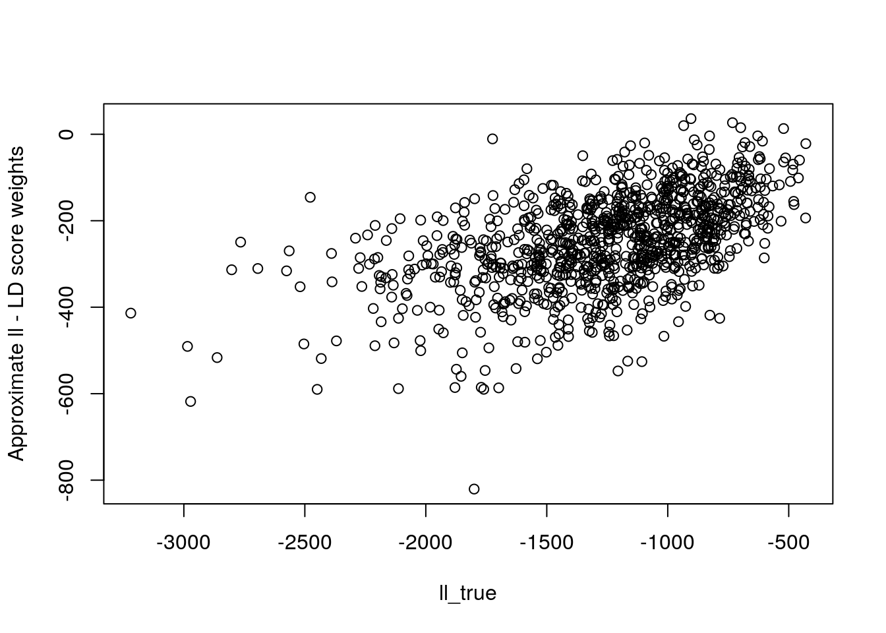
We find that the true and approximate likelihoods are significantly correlated. Approximating the likelihood using the LD score gives the best correlation, followed by weights equal to 1 and then followed by weights equal to the inverse of the LD score.
For all three approximations, the approximate log likelihood is much larger than the true log likelihood. This won’t matter if we want to use the approximate likelihood to estimate an MLE — we expect to get similar answers maximizing the true and approximate likelihoods since the likelihoods are correlated but will effect the trade-off between the likelihood and the prior if we are trying to approximate a posterior distribution.
If we consider all weights of the form \(w_{jk} = \left(\sum_{i=1}^{p}r_{ij}^2 \right)^{k}\) we can find the value of \(k\) that minimizes the mean squared error in the log likelihood \[\frac{1}{S} \sum_{s} \left( \log L(\hat{\theta}\vert \theta_s) - \sum_{j=1}^{p}w_{jk}\log L(\hat{\theta}_{j} \vert \theta_{sj})) \right)^{2} \] where the sum is taken over random samples of \(\theta\) or the value of \(k\) that maximizes the correlation between the true and approximate log likelihood.
fact <- seq(-2, 2.5, length.out=100)
ll_approx <- matrix(nrow=nsample, ncol=100)
ll_true <- c()
for(i in 1:nsample){
theta <- rnorm(n=76, sd=0.1)
ll_true <- c(ll_true, dmvnorm(betahat, mean=theta, sigma= sigma, log=T))
aa <- dnorm(x=betahat, mean=theta, sd=se, log = T)
ll_approx[i,] <- sapply(fact, function(x){sum((ldsc^x)*aa)})
}
mse <- apply(ll_approx, 2, function(x){sum(x-ll_true)^2})
plot(fact, mse, ylab="Mean squared error between true and approximate log likelihoods", xlab="k")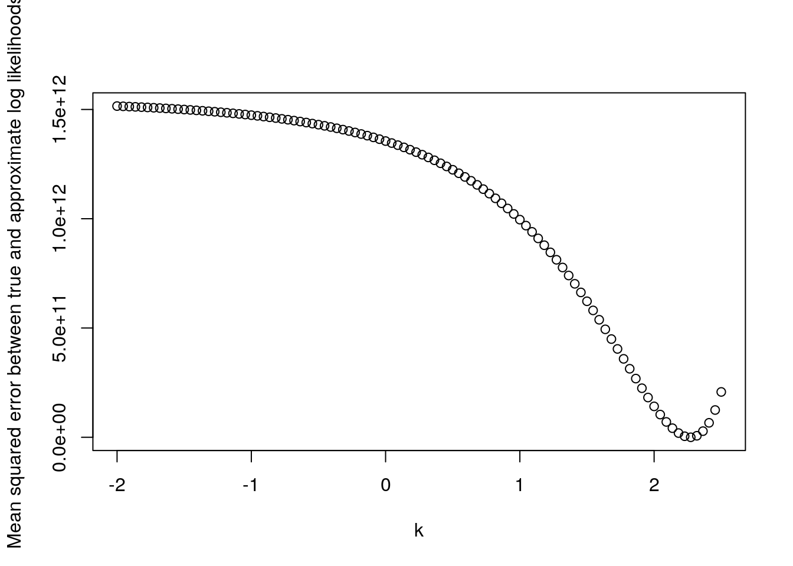
cc <- apply(ll_approx, 2, function(x){cor(x, ll_true)})
plot(fact, cc, xlab="k", ylab="correlation between true and approximate log likelihoods")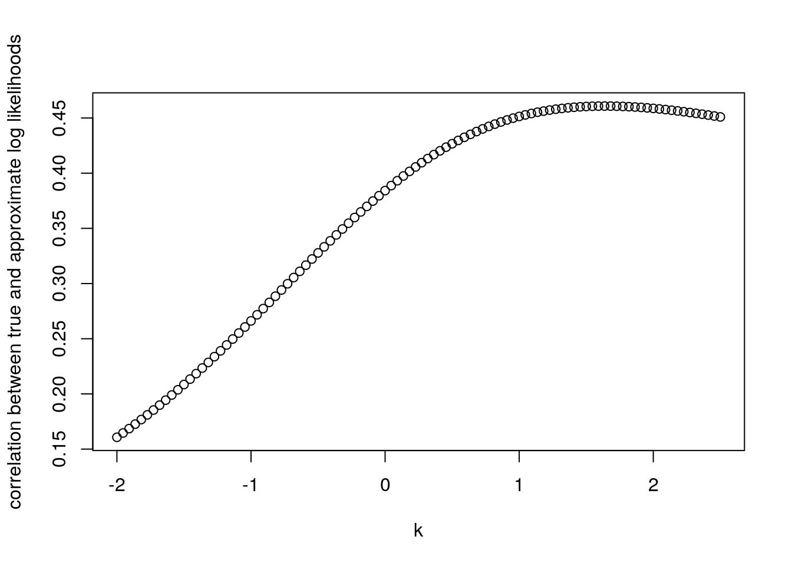
For this particular example, the correlation is maximized at \(k \approx\) 1.64 and the MSE is minimized at \(k \approx\) 2.27.
Now suppose that there is a prior distribution for \(\theta \sim N(0, \sigma^2 I)\) and we want to estimate \(\sigma^2\) or compute a posterior distribution for it given some prior. Integrating \(\theta\) out we get \[ \hat{\beta} \sim N (0, \sigma^2I + SRS ) \] We will compare the true likelihood of \(\sigma^2\) to the approximate likelihood computed as \[ \prod_{j=1}^{p} \left( N(\hat{\beta}_j ; 0, \sigma^2 + s_j^2) \right)^{w_j}\]
library(tidyr)
Attaching package: 'tidyr'The following object is masked from 'package:reshape2':
smithsll_true <- ll_ldsc <- ll_1 <- ll_invldsc <- c()
sigmas <- seq(0, 0.5, length.out=nsample)
for(i in 1:nsample){
ll_true <- c(ll_true, dmvnorm(betahat, mean=theta, sigma= ((sigmas[i]^2)*diag(rep(1, 76)) + sigma), log=T))
aa <- dnorm(x=betahat, mean=theta, sd=sqrt(sigmas[i]^2 + se^2), log = T)
ll_ldsc <- c(ll_ldsc, sum(ldsc*aa))
ll_1 <- c(ll_1, sum(aa))
ll_invldsc <- c(ll_invldsc, sum((1/ldsc)*aa))
}
df <- data.frame("sigma" = sigmas, ll_true, ll_ldsc, ll_1, ll_invldsc)
cor(df[,-1]) ll_true ll_ldsc ll_1 ll_invldsc
ll_true 1.0000000 0.5835901 0.5879889 0.5763320
ll_ldsc 0.5835901 1.0000000 0.9999636 0.9999451
ll_1 0.5879889 0.9999636 1.0000000 0.9998394
ll_invldsc 0.5763320 0.9999451 0.9998394 1.0000000df_long <- gather(df, "type", "ll", -sigma)
plt <- ggplot(df_long) + geom_line(aes(x=sigma, y=ll, group=type,color=type)) + theme_bw()
plt 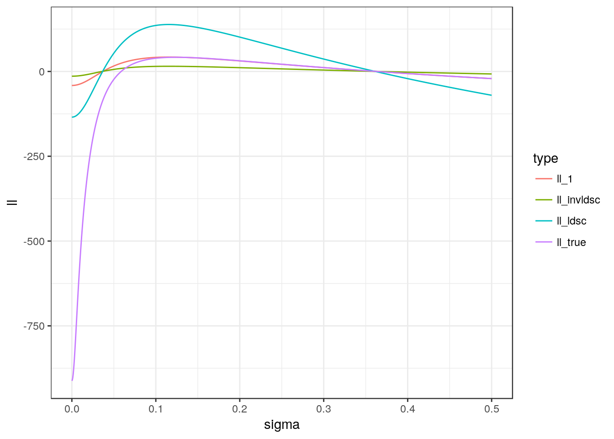
#plt + facet_wrap(~ type, scales = "free")
df_long <- gather(df, "type", "ll", -sigma, -ll_true)
plt <- ggplot(df_long) + geom_point(aes(x=ll_true, y=ll, group=type,color=type)) + theme_bw() + geom_abline(slope=1, intercept=0, lty=2)
plt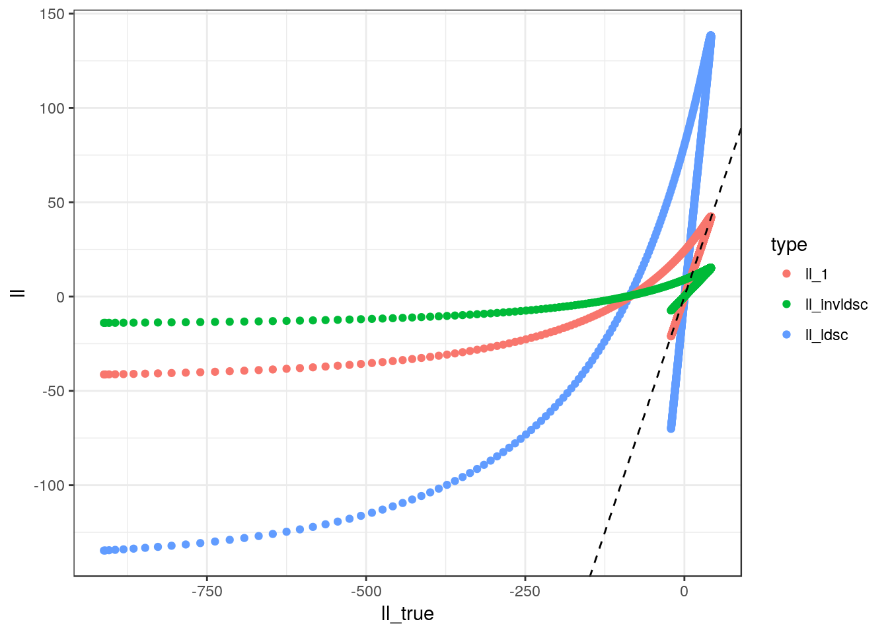
There is strong correlation between the approximate and the true likelihoods and the MLE is similar. The pseudo-log likelihood with weights equal to 1 seems to be a better approximateion of the true log likelihood over most of the range of \(\sigma\).
ll_approx <- matrix(nrow=nsample, ncol=100)
ll_true <- c()
for(i in 1:nsample){
ll_true <- c(ll_true, dmvnorm(betahat, mean=theta,
sigma= ((sigmas[i]^2)*diag(rep(1, 76)) + sigma), log=T))
aa <- dnorm(x=betahat, mean=theta, sd=sqrt(sigmas[i]^2 + se^2), log = T)
ll_approx[i,] <- sapply(fact, function(x){sum((ldsc^x)*aa)})
}Now suppose there is a flat prior of \(\sigma\) between 0 and 0.5. For each value of \(k\) we can compute the posterior and compute the KL divergence between the true posterior and the approximate posterior.
post_int <- sum(diff(sigmas)*exp(ll_true)[-1])
post_true <- exp(ll_true)[-1]/(post_int)
post_approx <- apply(ll_approx, 2, function(x){
post_int <- sum(diff(sigmas)*exp(x)[-1])
exp(x)[-1]/(post_int)
})
kl <- apply(post_approx, 2, function(x){
sum(diff(sigmas)*post_true*(log(post_true)-log(x)), na.rm=T)
})
plot(fact, kl, xlab="k", ylab="KL divergence true and approximate posteriors")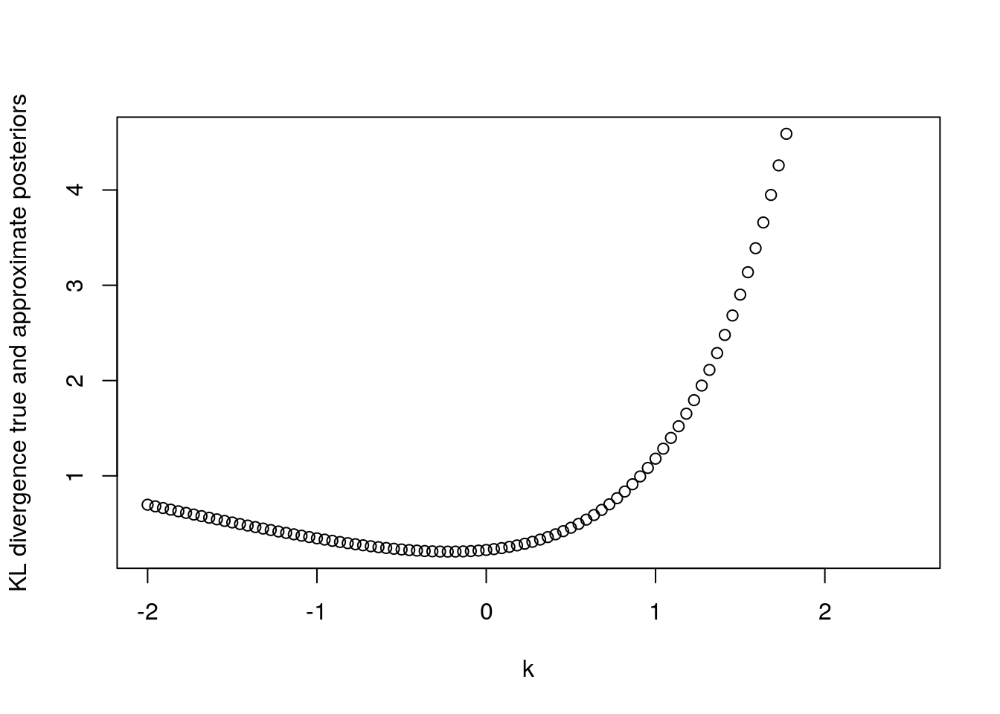
In this case, the KL divergence between the true posterior and the approximate posterior is minimized when \(k\approx\) -0.23.
Do we see the same pattern with other priors? Suppose that \(\sigma \sim Gamma(2, 4)\).
sigmas <- seq(0, 3, length.out=nsample)
ll_approx <- matrix(nrow=nsample, ncol=100)
ll_true <- c()
for(i in 1:nsample){
ll_true <- c(ll_true, dmvnorm(betahat, mean=theta,
sigma= ((sigmas[i]^2)*diag(rep(1, 76)) + sigma), log=T))
aa <- dnorm(x=betahat, mean=theta, sd=sqrt(sigmas[i]^2 + se^2), log = T)
ll_approx[i,] <- sapply(fact, function(x){sum((ldsc^x)*aa)})
}
post_int <- sum(diff(sigmas)*exp(ll_true [-1]+ dgamma(sigmas[-1], 2, 4, log=T)))
post_true <- exp(ll_true[-1]+ dgamma(sigmas[-1], 2, 4, log=T))/(post_int)
post_approx <- apply(ll_approx, 2, function(x){
post_int <- sum(diff(sigmas)*exp(x[-1]+ dgamma(sigmas[-1], 2, 4, log=T)))
exp(x[-1]+ dgamma(sigmas[-1], 2, 4, log=T))/(post_int)
})
kl <- apply(post_approx, 2, function(x){
sum(diff(sigmas)*post_true*(log(post_true)-log(x)), na.rm=T)
})
plot(fact, kl)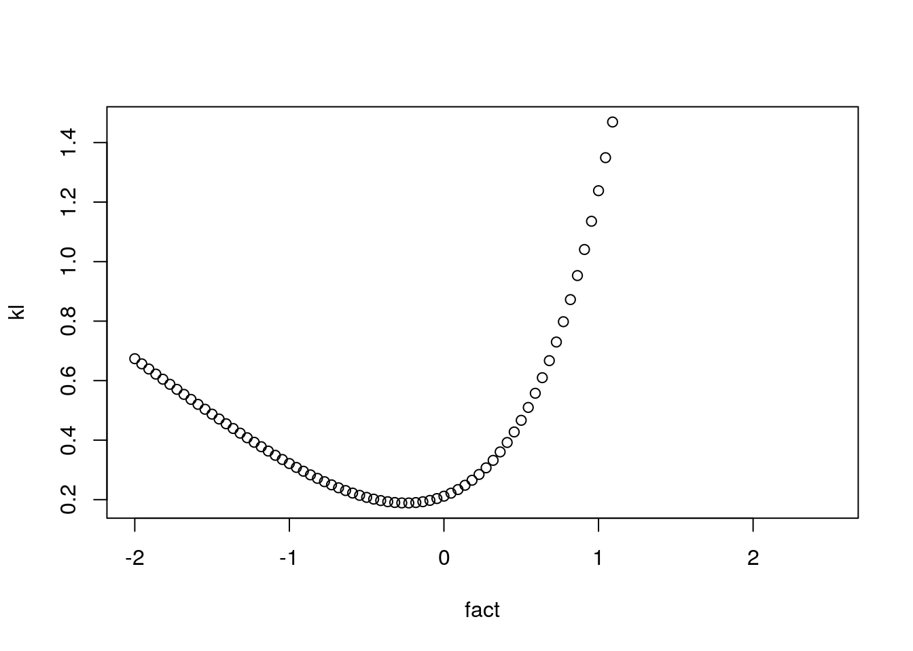
df <- data.frame(post_approx[, fact %in% c(-1, 0, 1, fact[which.min(kl)])])
names(df) <- fact[fact %in% c(-1, 0, 1, fact[which.min(kl)]) ]
df$true <- post_true
df$sigma <- sigmas[-1]
df_long <- gather(df, "k", "likelihood", -sigma)
plt <- ggplot(df_long[df_long$sigma <= 0.5,]) + geom_line(aes(x=sigma, y=likelihood, group=k, color=k)) + theme_bw()
plt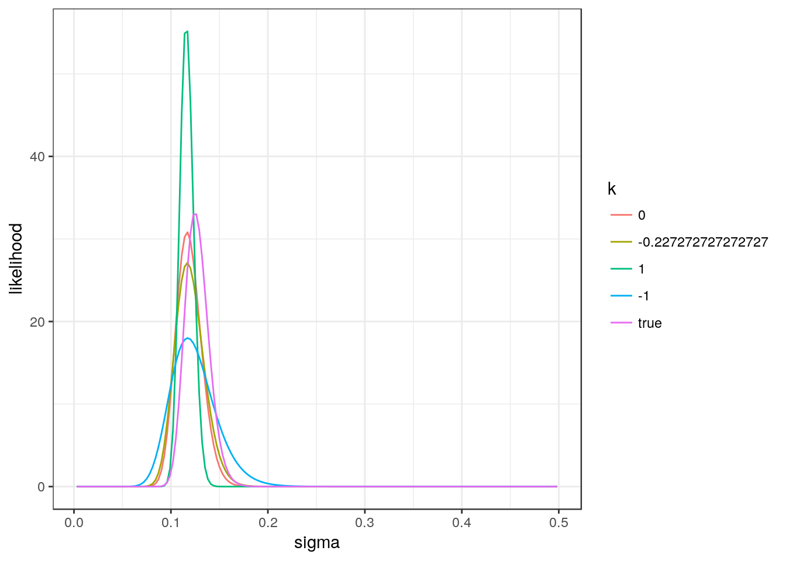
Suppose that \[ \hat{\beta}_1 \sim N(\theta, S_1 R S_1) \] and \[ \hat{\beta}_2 \sim N(b \theta + \gamma, S_2 R S_2) \]
We first generate some data. We use \(b=0.4\) and generate standard errors for the second set of effect size estimates as though they are estimates from a GWAS with sample size 5000.
beta_hat_1 <- betahat
b <- 0.4
true_gamma <- rnorm(n=76, mean=0, sd=0.05)
se1 <- se
se2 <- sqrt(1/(2*5000*maf*(1-maf)))
sigma2 <- diag(se2) %*% R %*% diag(se2)
sigma1 <- sigma
beta_hat_2 <- rmvnorm(n=1, mean=b * true_theta + true_gamma, sigma=sigma2)We first assume \(\theta\) and \(\gamma\) are known and calculate the likelihood of \(\hat{\beta}_2\) for different values of \(b\).
nsample <- 4000
bs <- seq(-4, 4, length.out=nsample)
ll_true <- c()
ll_approx <- matrix(nrow=nsample, ncol=100)
for(i in 1:nsample){
ll_true <- c(ll_true,
dmvnorm(beta_hat_2, mean=bs[i]*true_theta + true_gamma,
sigma= sigma2, log=T))
aa <- dnorm(x=beta_hat_2, mean=bs[i]*true_theta + true_gamma, sd=se2, log = T)
ll_approx[i,] <- sapply(fact, function(x){sum((ldsc^x)*aa)})
}Suppose that \(b\sim N(0, 1)\). The posterior distribution for \(b\) using approximations with different values of \(k\) are shown below.
post <- ll_true + dnorm(bs, 0, 1, log=T)
post_int <- sum(diff(bs)* exp(post[-1]))
post_true <- exp(post[-1])/(post_int)
post_approx <- apply(ll_approx, 2, function(x){
post <- x + dnorm(bs, 0, 1, log=T)
log_post_int <- logSumExp(log(diff(bs)) + post[-1])
exp(post[-1] - log_post_int)
})
kl <- apply(post_approx, 2, function(x){
sum(diff(bs)*post_true*(log(post_true)-log(x)), na.rm=T)
})
plot(fact, kl)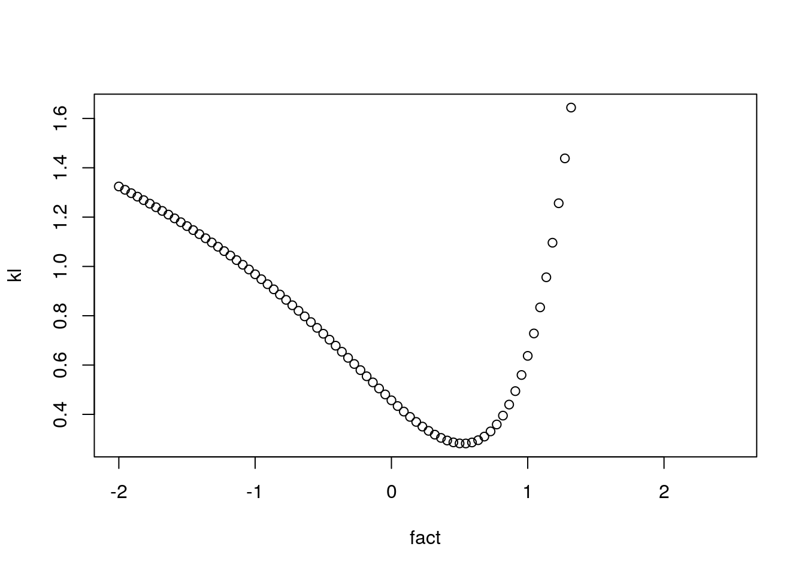
df <- data.frame(post_approx[, fact %in% c(-1, 0, fact[which.min(kl)], 1, 2)])
names(df) <- fact[fact %in% c(-1, 0, fact[which.min(kl)], 1, 2)]
df$true <- post_true
df$b <- bs[-1]
df_long <- gather(df, "k", "likelihood", -b)
plt <- ggplot(df_long) + geom_line(aes(x=b, y=likelihood, group=k, color=k)) +
scale_x_continuous(limits=c(0, 0.74)) +
theme_bw()
pltWarning: Removed 21774 rows containing missing values (geom_path).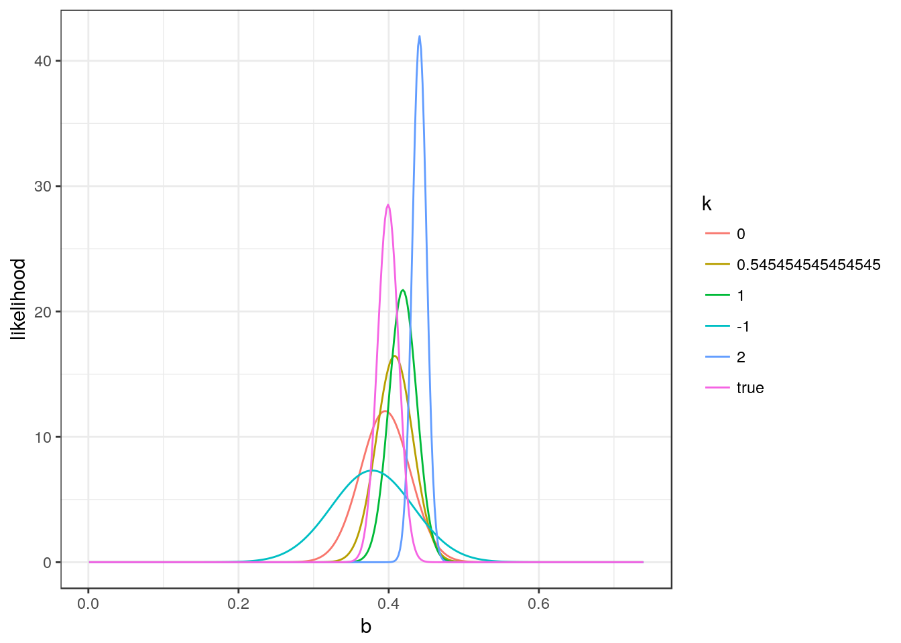
post_mean_true <- sum(diff(bs)*bs[-1]*post_true, na.rm=T)
post_mean <- apply(post_approx, 2, function(x){
sum(diff(bs)*bs[-1]*x, na.rm=T)
})
post_var_true <- sum(diff(bs)*((bs[-1]-post_mean_true)^2)*post_true, na.rm=T)
post_var <- apply(post_approx, 2, function(x){
pm <- sum(diff(bs)*bs[-1]*x, na.rm=T)
sum(diff(bs)*((bs[-1]-pm)^2)*x, na.rm=T)
})For this case, the KL divergence between the true posterior and the approximate is minimized by \(k \approx\) 0.55.
Now suppose that, conditional on \(\theta\) and \(\gamma\), there is no correlation between \(\hat{\beta}_1\) and \(\hat{\beta}_2\). Suppose that \(\theta \sim N(0, \Sigma_1)\) and \(\gamma \sim N(0, \Sigma_2)\). Then
\[ \begin{pmatrix} \hat{\beta}_1\\\hat{\beta}_2 \end{pmatrix} \sim N\left( \begin{pmatrix} 0\\0\end{pmatrix}, \begin{pmatrix} S_1 R S_1 + \Sigma_1 & b \Sigma_1 \\ b \Sigma_1 & S_2 R S_2 + b\Sigma_1 + \Sigma_2 \end{pmatrix} \right) \]
We will try to approximate this likelihood using
\[ \prod_{j=1}^{p} \left( N \left(\begin{pmatrix} \hat{\beta}_{1j}\\\hat{\beta}_{2j} \end{pmatrix}; \begin{pmatrix} 0 \\ 0\end{pmatrix}, \begin{pmatrix} s_{1j}^2 + \sigma_{1j}^2 & b \sigma_{1j}^2\\ b \sigma_{1j}^2 & s_{2j}^2 + b^2 \sigma_{1j}^2 + \sigma_{2j}^2 \end{pmatrix}\right) \right)^{w_j} \]
Suppose that \(\Sigma_1\) and \(\Sigma_2\) are known. For this example, we use diagonal matrices, \(\Sigma_1 = (0.1)^2 I\) and \(\Sigma_2 = (0.05)^2 I\). We assume there a \(N(0, 1)\) prior for \(b\) and wish to estimate the posterior of \(b\).
nsample <- 1000
bs <- seq(-1, 1, length.out=nsample)
ll_true <- c()
ll_approx <- matrix(nrow=nsample, ncol=100)
s1 <- 0.1
s2 <- 0.05
v_11 <- se1^2 + s1^2
for(i in 1:nsample){
big_sigma <- rbind( cbind(sigma1 + diag(rep(s1^2, 76)), bs[i]*diag(rep(s1^2, 76))),
cbind(bs[i]*diag(rep(s1^2, 76)), sigma2 +
(bs[i]^2)*diag(rep(s1^2, 76)) +
diag(rep(s2^2, 76))))
v_12 <- bs[i]*s1^2
v_22 <- se2^2 + (bs[i]^2)*s1^2 + s2^2
v_2g1 <- v_22 - ((v_12^2)/v_11)
#cat(sum(v_2g1 < 0), " ")
ll_true <- c(ll_true,
dmvnorm(c(beta_hat_1, beta_hat_2), mean=rep(0, 2*76),
sigma= big_sigma, log=T))
aa <- dnorm(x=beta_hat_1, mean=0, sd=sqrt(v_11), log = T) +
dnorm(x=beta_hat_2, mean=(v_12/v_11)*beta_hat_1, sd=sqrt(v_22 - ((v_12^2)/v_11)), log = T)
ll_approx[i,] <- sapply(fact, function(x){sum((ldsc^x)*aa)})
}post <- ll_true + dnorm(bs, 0, 1, log=T)
post_int <- sum(diff(bs)* exp(post[-1]))
post_true <- exp(post[-1])/(post_int)
post_approx <- apply(ll_approx, 2, function(x){
post <- x + dnorm(bs, 0, 1, log=T)
log_post_int <- logSumExp(log(diff(bs)) + post[-1])
exp(post[-1] - log_post_int)
})
kl <- apply(post_approx, 2, function(x){
sum(diff(bs)*post_true*(log(post_true)-log(x)), na.rm=T)
})
plot(fact, kl)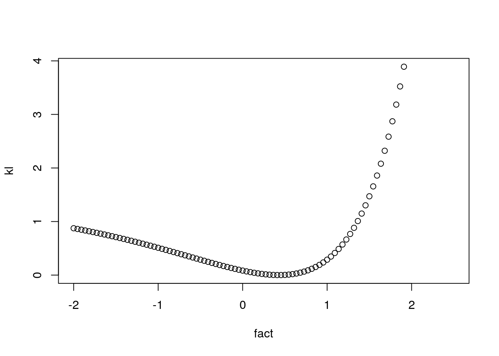
df <- data.frame(post_approx[, fact %in% c(-1, 0, fact[which.min(kl)], 1, 2)])
names(df) <- fact[fact %in% c(-1, 0, fact[which.min(kl)], 1, 2)]
df$true <- post_true
df$b <- bs[-1]
df_long <- gather(df, "k", "likelihood", -b)
plt <- ggplot(df_long) + geom_line(aes(x=b, y=likelihood, group=k, color=k)) +
scale_x_continuous(limits=c(0, 0.74)) +
theme_bw()
pltWarning: Removed 3774 rows containing missing values (geom_path).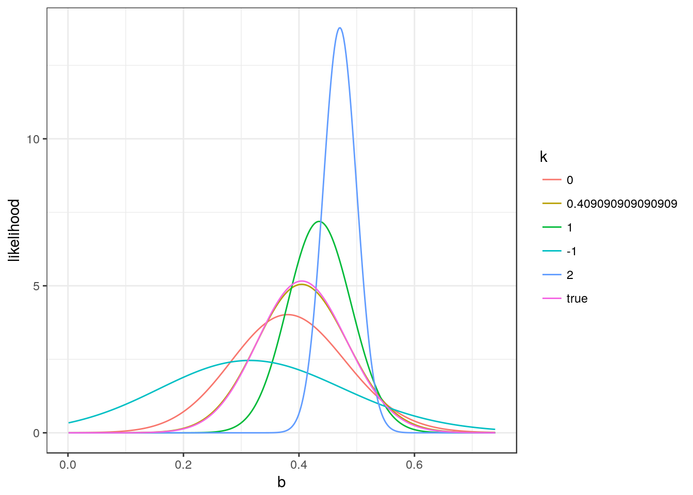
The best approximation in this example uses \(k \approx\) 0.41. These approximations of the posterior actually seem surprsingly good.
Ok. Now suppose that \(\Sigma_m = S_1 R S_1^{-1} \Gamma_m S_1^{-1} R S_1\) for \(m = 1,2\) where \(\Gamma_m\) is diagonal and most of the diagonal elements are equal to zero. Suppose we know the diagona elements of \(\Sigma_1\) and \(\Sigma_2\).
set.seed(3456789)
gamma_1 <- gamma_2 <- rep(0, 76)
gamma_1[sample(5:70, size=2)] <- 0.1^2
gamma_2[sample(5:70, size=5)] <- 0.05^2
S1 <- diag(se1) %*% R %*% diag( (1/se1)*gamma_1*(1/se1)) %*% R %*% diag(se1)
S2 <- diag(se2) %*% R %*% diag( (1/se2)*gamma_2*(1/se2)) %*% R %*% diag(se2)
theta <- rmvnorm(n=1, mean=rep(0, 76), sigma = S1)
gamma <- rmvnorm(n=1, mean=rep(0, 76), sigma=S2)
beta_hat_1 <- rmvnorm(n=1, mean=theta, sigma=sigma1)
beta_hat_2 <- rmvnorm(n=1, mean=(b*theta + gamma), sigma=sigma2)ll_true <- c()
ll_approx <- matrix(nrow=nsample, ncol=100)
v_11 <- se1^2 + diag(S1)
for(i in 1:nsample){
big_sigma <- rbind( cbind(sigma1 + S1, bs[i]*S1),
cbind(bs[i]*S1, sigma2 + (bs[i]^2)*S1 + S2))
v_12 <- bs[i]*diag(S1)
v_22 <- se2^2 + (bs[i]^2)*diag(S1)+ diag(S2)
v_2g1 <- v_22 - ((v_12^2)/v_11)
#cat(sum(v_2g1 < 0), " ")
ll_true <- c(ll_true,
dmvnorm(c(beta_hat_1, beta_hat_2), mean=rep(0, 2*76),
sigma= big_sigma, log=T))
aa <- dnorm(x=beta_hat_1, mean=0, sd=sqrt(v_11), log = T) +
dnorm(x=beta_hat_2, mean=(v_12/v_11)*beta_hat_1,
sd=sqrt(v_22 - ((v_12^2)/v_11)), log = T)
ll_approx[i,] <- sapply(fact, function(x){sum((ldsc^x)*aa)})
}post <- ll_true + dnorm(bs, 0, 1, log=T)
post_int <- sum(diff(bs)* exp(post[-1]))
post_true <- exp(post[-1])/(post_int)
post_approx <- apply(ll_approx, 2, function(x){
post <- x + dnorm(bs, 0, 1, log=T)
log_post_int <- logSumExp(log(diff(bs)) + post[-1])
exp(post[-1] - log_post_int)
})
kl <- apply(post_approx, 2, function(x){
sum(diff(bs)*post_true*(log(post_true)-log(x)), na.rm=T)
})
plot(fact, kl)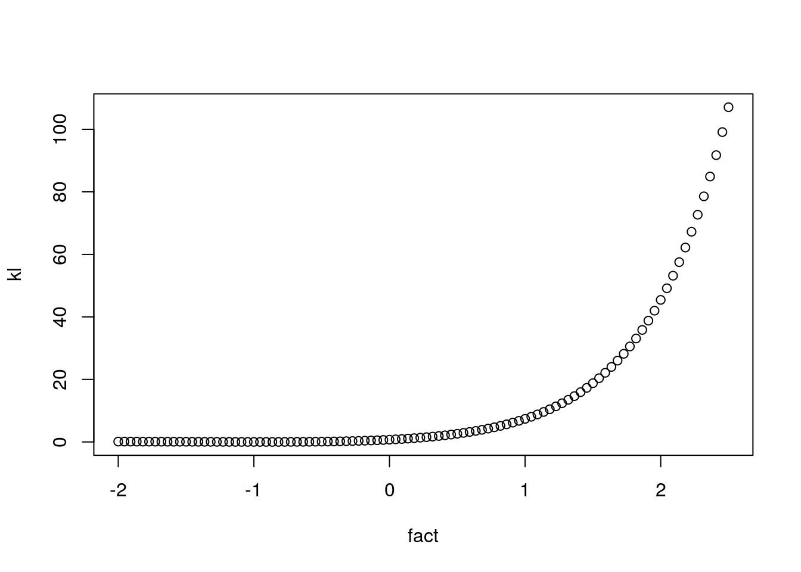
df <- data.frame(post_approx[, fact %in% c(-1, 0, fact[which.min(kl)], 1, 2)])
names(df) <- fact[fact %in% c(-1, 0, fact[which.min(kl)], 1, 2)]
df$true <- post_true
df$b <- bs[-1]
df_long <- gather(df, "k", "likelihood", -b)
plt <- ggplot(df_long) + geom_line(aes(x=b, y=likelihood, group=k, color=k)) +
theme_bw()
plt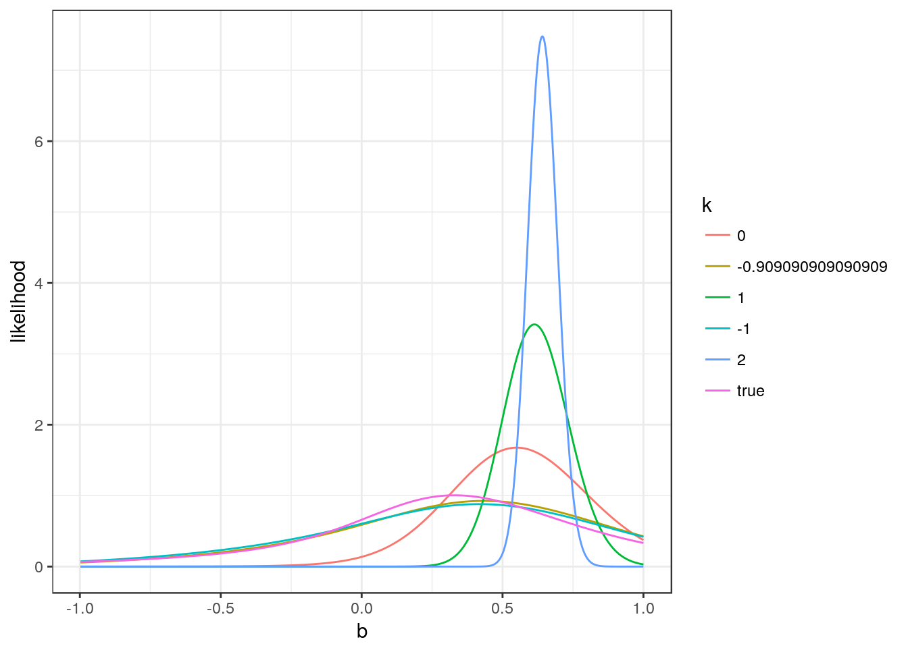
In this case, the posterior is much better approximated using \(k \approx\) -0.91 than the larger vlaues that worked better for the non-sparse case.
sessionInfo()R version 3.4.1 (2017-06-30)
Platform: x86_64-pc-linux-gnu (64-bit)
Running under: Ubuntu 17.04
Matrix products: default
BLAS: /usr/lib/libblas/libblas.so.3.7.0
LAPACK: /usr/lib/lapack/liblapack.so.3.7.0
locale:
[1] LC_CTYPE=en_US.UTF-8 LC_NUMERIC=C
[3] LC_TIME=en_US.UTF-8 LC_COLLATE=en_US.UTF-8
[5] LC_MONETARY=en_US.UTF-8 LC_MESSAGES=en_US.UTF-8
[7] LC_PAPER=en_US.UTF-8 LC_NAME=C
[9] LC_ADDRESS=C LC_TELEPHONE=C
[11] LC_MEASUREMENT=en_US.UTF-8 LC_IDENTIFICATION=C
attached base packages:
[1] stats graphics grDevices utils datasets methods base
other attached packages:
[1] tidyr_0.6.3 mvtnorm_1.0-6 matrixStats_0.52.2
[4] ggplot2_2.2.1 reshape2_1.4.2
loaded via a namespace (and not attached):
[1] Rcpp_0.12.13 knitr_1.16 magrittr_1.5 munsell_0.4.3
[5] colorspace_1.3-2 R6_2.2.1 rlang_0.1.1 dplyr_0.5.0
[9] stringr_1.2.0 plyr_1.8.4 tools_3.4.1 grid_3.4.1
[13] gtable_0.2.0 DBI_0.6-1 htmltools_0.3.6 assertthat_0.2.0
[17] yaml_2.1.14 lazyeval_0.2.0 rprojroot_1.2 digest_0.6.12
[21] tibble_1.3.1 evaluate_0.10 rmarkdown_1.6 labeling_0.3
[25] stringi_1.1.5 compiler_3.4.1 scales_0.4.1 backports_1.1.0 This R Markdown site was created with workflowr